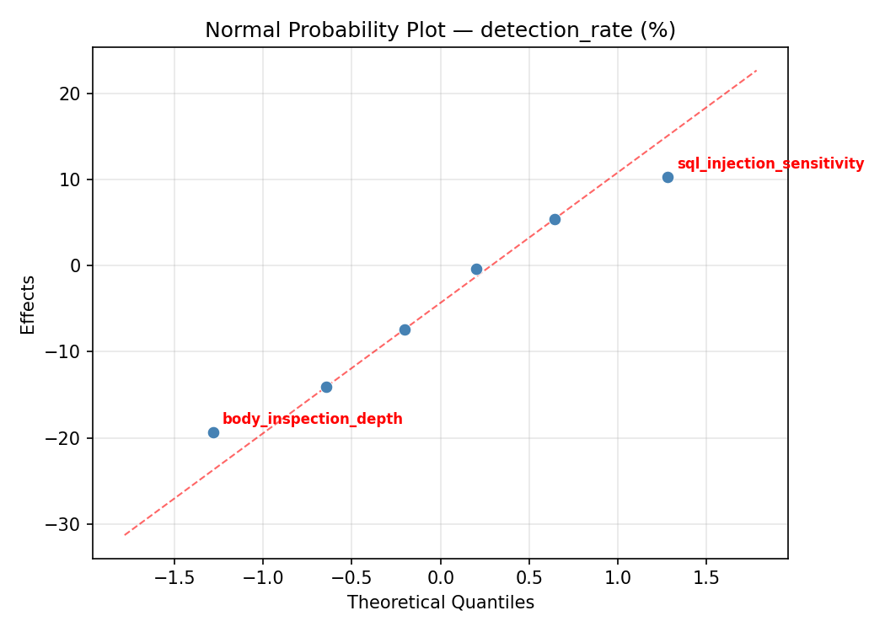
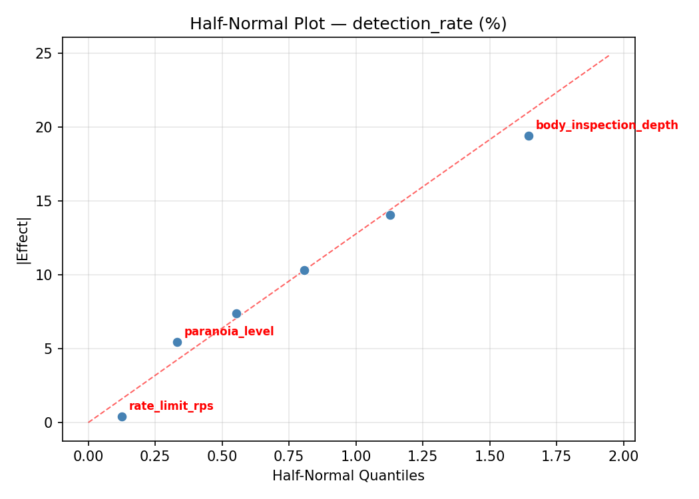
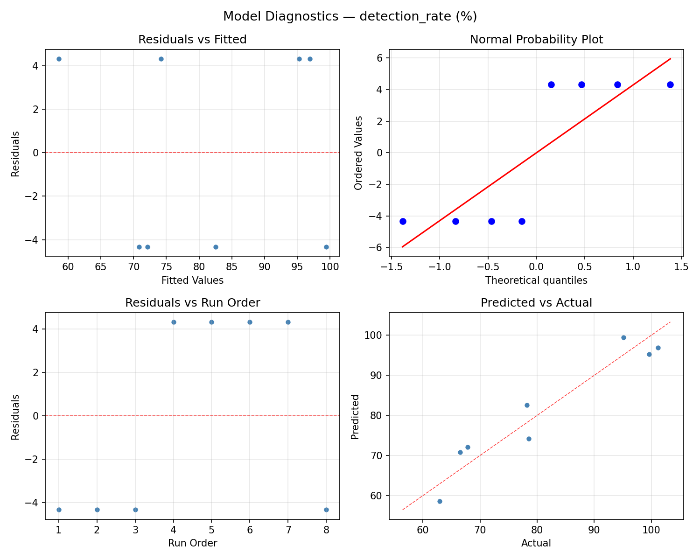
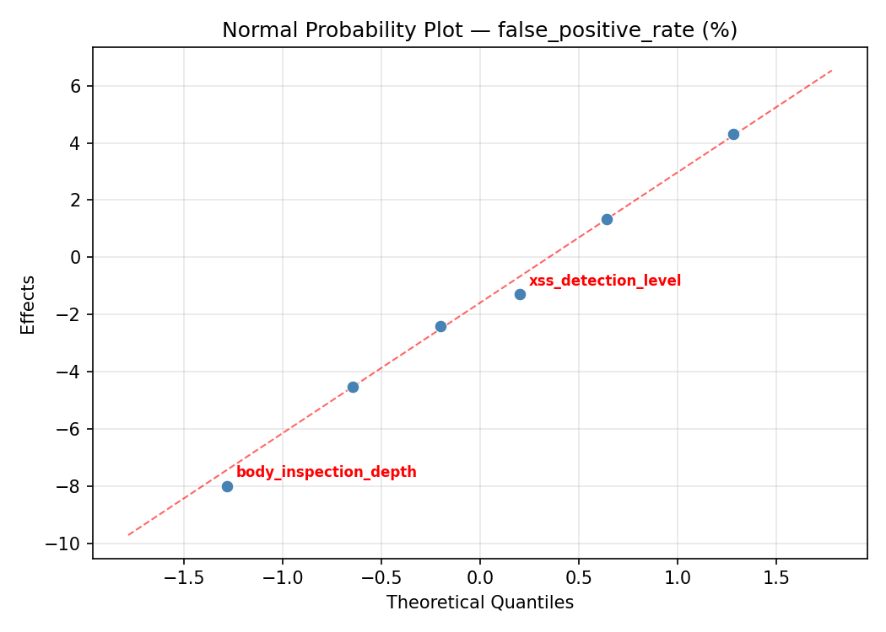
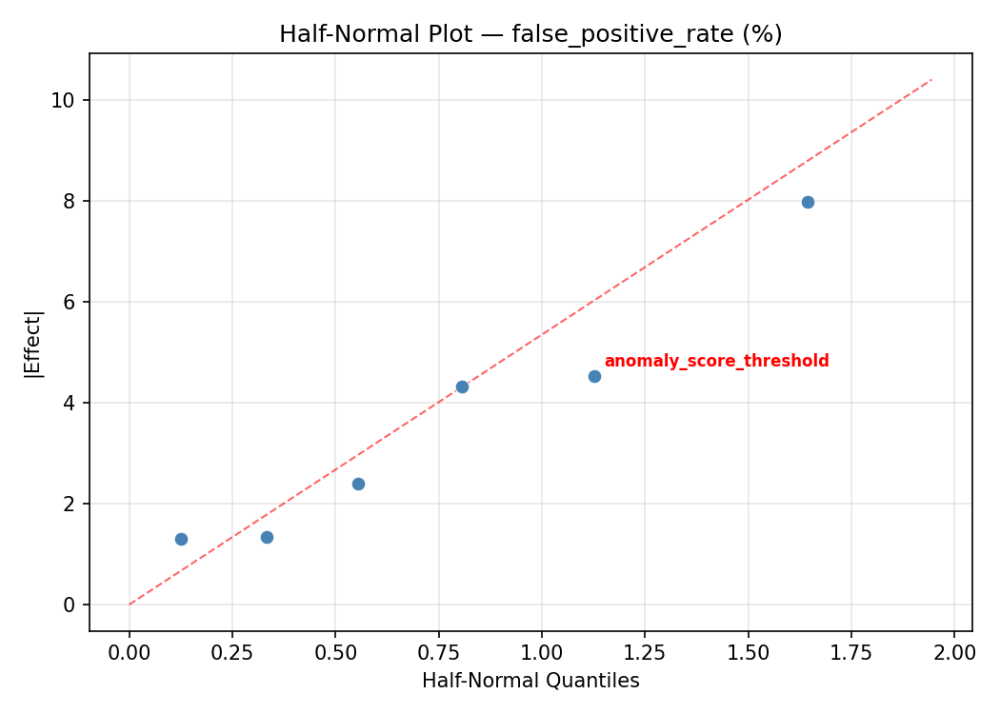
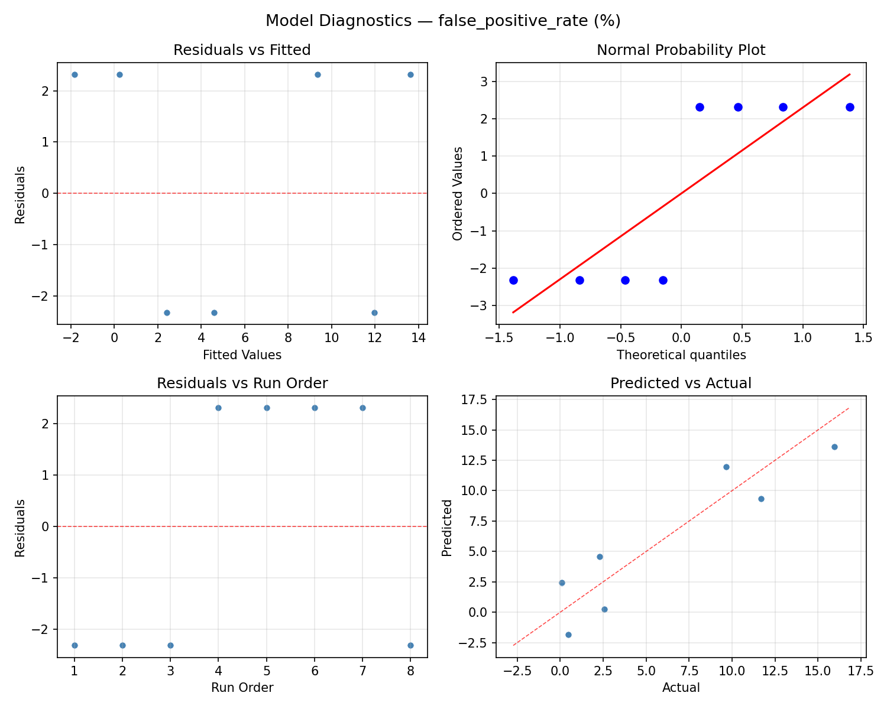

Summary
This experiment investigates waf rule threshold tuning. Plackett-Burman screening of 6 WAF parameters for detection rate and false positive rate.
The design varies 6 factors: rate limit rps (rps), ranging from 100 to 10000, body inspection depth (bytes), ranging from 1000 to 65536, anomaly score threshold (score), ranging from 3 to 15, paranoia level (level), ranging from 1 to 4, sql injection sensitivity (level), ranging from 1 to 9, and xss detection level (level), ranging from 1 to 5. The goal is to optimize 2 responses: detection rate (%) (maximize) and false positive rate (%) (minimize). Fixed conditions held constant across all runs include waf engine = modsecurity, ruleset = owasp_crs.
A Plackett-Burman screening design was used to efficiently test 6 factors in only 8 runs. This design assumes interactions are negligible and focuses on identifying the most influential main effects.
Key Findings
For detection rate, the most influential factors were paranoia level (30.0%), xss detection level (19.6%), body inspection depth (18.2%). The best observed value was 101.2 (at rate limit rps = 10000, body inspection depth = 65536, anomaly score threshold = 15).
For false positive rate, the most influential factors were paranoia level (37.9%), xss detection level (20.6%), body inspection depth (20.0%). The best observed value was 0.09 (at rate limit rps = 100, body inspection depth = 1000, anomaly score threshold = 15).
Recommended Next Steps
- Follow up with a response surface design (CCD or Box-Behnken) on the top 3–4 factors to model curvature and find the true optimum.
- Consider whether any fixed factors should be varied in a future study.
- The screening results can guide factor reduction — drop factors contributing less than 5% and re-run with a smaller, more focused design.
Experimental Setup
Factors
| Factor | Low | High | Unit |
|---|
rate_limit_rps | 100 | 10000 | rps |
body_inspection_depth | 1000 | 65536 | bytes |
anomaly_score_threshold | 3 | 15 | score |
paranoia_level | 1 | 4 | level |
sql_injection_sensitivity | 1 | 9 | level |
xss_detection_level | 1 | 5 | level |
Fixed: waf_engine = modsecurity, ruleset = owasp_crs
Responses
| Response | Direction | Unit |
|---|
detection_rate | ↑ maximize | % |
false_positive_rate | ↓ minimize | % |
Configuration
{
"metadata": {
"name": "WAF Rule Threshold Tuning",
"description": "Plackett-Burman screening of 6 WAF parameters for detection rate and false positive rate"
},
"factors": [
{
"name": "rate_limit_rps",
"levels": [
"100",
"10000"
],
"type": "continuous",
"unit": "rps"
},
{
"name": "body_inspection_depth",
"levels": [
"1000",
"65536"
],
"type": "continuous",
"unit": "bytes"
},
{
"name": "anomaly_score_threshold",
"levels": [
"3",
"15"
],
"type": "continuous",
"unit": "score"
},
{
"name": "paranoia_level",
"levels": [
"1",
"4"
],
"type": "continuous",
"unit": "level"
},
{
"name": "sql_injection_sensitivity",
"levels": [
"1",
"9"
],
"type": "continuous",
"unit": "level"
},
{
"name": "xss_detection_level",
"levels": [
"1",
"5"
],
"type": "continuous",
"unit": "level"
}
],
"fixed_factors": {
"waf_engine": "modsecurity",
"ruleset": "owasp_crs"
},
"responses": [
{
"name": "detection_rate",
"optimize": "maximize",
"unit": "%"
},
{
"name": "false_positive_rate",
"optimize": "minimize",
"unit": "%"
}
],
"settings": {
"operation": "plackett_burman",
"test_script": "use_cases/57_waf_rule_threshold/sim.sh"
}
}
Experimental Matrix
The Plackett-Burman Design produces 8 runs. Each row is one experiment with specific factor settings.
| Run | rate_limit_rps | body_inspection_depth | anomaly_score_threshold | paranoia_level | sql_injection_sensitivity | xss_detection_level |
|---|
| 1 | 10000 | 65536 | 15 | 1 | 1 | 1 |
| 2 | 100 | 1000 | 15 | 4 | 1 | 1 |
| 3 | 100 | 65536 | 3 | 4 | 1 | 5 |
| 4 | 10000 | 65536 | 15 | 4 | 9 | 5 |
| 5 | 100 | 65536 | 3 | 1 | 9 | 1 |
| 6 | 10000 | 1000 | 3 | 4 | 9 | 1 |
| 7 | 100 | 1000 | 15 | 1 | 9 | 5 |
| 8 | 10000 | 1000 | 3 | 1 | 1 | 5 |
Step-by-Step Workflow
1
Preview the design
$ python doe.py info --config use_cases/57_waf_rule_threshold/config.json
2
Generate the runner script
$ python doe.py generate --config use_cases/57_waf_rule_threshold/config.json \
--output use_cases/57_waf_rule_threshold/results/run.sh --seed 42
3
Execute the experiments
$ bash use_cases/57_waf_rule_threshold/results/run.sh
4
Analyze results
$ python doe.py analyze --config use_cases/57_waf_rule_threshold/config.json
5
Get optimization recommendations
$ python doe.py optimize --config use_cases/57_waf_rule_threshold/config.json
6
Multi-objective optimization
With 2 competing responses, use --multi to find the best compromise via Derringer–Suich desirability.
$ python doe.py optimize --config use_cases/57_waf_rule_threshold/config.json --multi
7
Generate the HTML report
$ python doe.py report --config use_cases/57_waf_rule_threshold/config.json \
--output use_cases/57_waf_rule_threshold/results/report.html
Features Exercised
| Feature | Value |
|---|
| Design type | plackett_burman |
| Factor types | continuous (all 6) |
| Arg style | double-dash |
| Responses | 2 (detection_rate ↑, false_positive_rate ↓) |
| Total runs | 8 |
Analysis Results
Generated from actual experiment runs using the DOE Helper Tool.
Response: detection_rate
Top factors: paranoia_level (30.0%), xss_detection_level (19.6%), body_inspection_depth (18.2%).
ANOVA
| Source | DF | SS | MS | F | p-value |
|---|
| Source | DF | SS | MS | F | p-value |
| rate_limit_rps | 1 | 124.8200 | 124.8200 | 0.392 | 0.5510 |
| body_inspection_depth | 1 | 212.1800 | 212.1800 | 0.667 | 0.4411 |
| anomaly_score_threshold | 1 | 16.2450 | 16.2450 | 0.051 | 0.8277 |
| paranoia_level | 1 | 574.6050 | 574.6050 | 1.805 | 0.2210 |
| sql_injection_sensitivity | 1 | 109.5200 | 109.5200 | 0.344 | 0.5759 |
| xss_detection_level | 1 | 246.4200 | 246.4200 | 0.774 | 0.4081 |
| rate_limit_rps*body_inspection_depth | 1 | 16.2450 | 16.2450 | 0.051 | 0.8277 |
| rate_limit_rps*anomaly_score_threshold | 1 | 212.1800 | 212.1800 | 0.667 | 0.4411 |
| rate_limit_rps*paranoia_level | 1 | 109.5200 | 109.5200 | 0.344 | 0.5759 |
| rate_limit_rps*sql_injection_sensitivity | 1 | 574.6050 | 574.6050 | 1.805 | 0.2210 |
| rate_limit_rps*xss_detection_level | 1 | 394.8050 | 394.8050 | 1.240 | 0.3022 |
| body_inspection_depth*anomaly_score_threshold | 1 | 124.8200 | 124.8200 | 0.392 | 0.5510 |
| body_inspection_depth*paranoia_level | 1 | 246.4200 | 246.4200 | 0.774 | 0.4081 |
| body_inspection_depth*sql_injection_sensitivity | 1 | 394.8050 | 394.8050 | 1.240 | 0.3022 |
| body_inspection_depth*xss_detection_level | 1 | 574.6050 | 574.6050 | 1.805 | 0.2210 |
| anomaly_score_threshold*paranoia_level | 1 | 394.8050 | 394.8050 | 1.240 | 0.3022 |
| anomaly_score_threshold*sql_injection_sensitivity | 1 | 246.4200 | 246.4200 | 0.774 | 0.4081 |
| anomaly_score_threshold*xss_detection_level | 1 | 109.5200 | 109.5200 | 0.344 | 0.5759 |
| paranoia_level*sql_injection_sensitivity | 1 | 124.8200 | 124.8200 | 0.392 | 0.5510 |
| paranoia_level*xss_detection_level | 1 | 212.1800 | 212.1800 | 0.667 | 0.4411 |
| sql_injection_sensitivity*xss_detection_level | 1 | 16.2450 | 16.2450 | 0.051 | 0.8277 |
| Error | (Lenth | PSE) | 7 | 2227.8900 | 318.2700 |
| Total | 7 | 1678.5950 | 239.7993 | | |
Pareto Chart

Main Effects Plot

Normal Probability Plot of Effects

Half-Normal Plot of Effects

Model Diagnostics

Response: false_positive_rate
Top factors: paranoia_level (37.9%), xss_detection_level (20.6%), body_inspection_depth (20.0%).
ANOVA
| Source | DF | SS | MS | F | p-value |
|---|
| Source | DF | SS | MS | F | p-value |
| rate_limit_rps | 1 | 2.6681 | 2.6681 | 0.048 | 0.8332 |
| body_inspection_depth | 1 | 37.2384 | 37.2384 | 0.667 | 0.4411 |
| anomaly_score_threshold | 1 | 9.6800 | 9.6800 | 0.173 | 0.6897 |
| paranoia_level | 1 | 133.8248 | 133.8248 | 2.396 | 0.1656 |
| sql_injection_sensitivity | 1 | 3.3540 | 3.3540 | 0.060 | 0.8135 |
| xss_detection_level | 1 | 39.5160 | 39.5160 | 0.707 | 0.4281 |
| rate_limit_rps*body_inspection_depth | 1 | 9.6800 | 9.6800 | 0.173 | 0.6897 |
| rate_limit_rps*anomaly_score_threshold | 1 | 37.2385 | 37.2385 | 0.667 | 0.4411 |
| rate_limit_rps*paranoia_level | 1 | 3.3541 | 3.3541 | 0.060 | 0.8135 |
| rate_limit_rps*sql_injection_sensitivity | 1 | 133.8248 | 133.8248 | 2.396 | 0.1656 |
| rate_limit_rps*xss_detection_level | 1 | 40.8608 | 40.8608 | 0.732 | 0.4207 |
| body_inspection_depth*anomaly_score_threshold | 1 | 2.6681 | 2.6681 | 0.048 | 0.8332 |
| body_inspection_depth*paranoia_level | 1 | 39.5160 | 39.5160 | 0.707 | 0.4281 |
| body_inspection_depth*sql_injection_sensitivity | 1 | 40.8608 | 40.8608 | 0.732 | 0.4207 |
| body_inspection_depth*xss_detection_level | 1 | 133.8248 | 133.8248 | 2.396 | 0.1656 |
| anomaly_score_threshold*paranoia_level | 1 | 40.8608 | 40.8608 | 0.732 | 0.4207 |
| anomaly_score_threshold*sql_injection_sensitivity | 1 | 39.5160 | 39.5160 | 0.707 | 0.4281 |
| anomaly_score_threshold*xss_detection_level | 1 | 3.3541 | 3.3541 | 0.060 | 0.8135 |
| paranoia_level*sql_injection_sensitivity | 1 | 2.6680 | 2.6680 | 0.048 | 0.8332 |
| paranoia_level*xss_detection_level | 1 | 37.2384 | 37.2384 | 0.667 | 0.4411 |
| sql_injection_sensitivity*xss_detection_level | 1 | 9.6800 | 9.6800 | 0.173 | 0.6897 |
| Error | (Lenth | PSE) | 7 | 391.0037 | 55.8577 |
| Total | 7 | 267.1422 | 38.1632 | | |
Pareto Chart

Main Effects Plot

Normal Probability Plot of Effects

Half-Normal Plot of Effects

Model Diagnostics

Response Surface Plots
3D surfaces fitted with quadratic RSM. Red dots are observed data points.
detection rate anomaly score threshold vs paranoia level

detection rate anomaly score threshold vs sql injection sensitivity

detection rate anomaly score threshold vs xss detection level

detection rate body inspection depth vs anomaly score threshold

detection rate body inspection depth vs paranoia level

detection rate body inspection depth vs sql injection sensitivity

detection rate body inspection depth vs xss detection level

detection rate paranoia level vs sql injection sensitivity

detection rate paranoia level vs xss detection level

detection rate rate limit rps vs anomaly score threshold

detection rate rate limit rps vs body inspection depth

detection rate rate limit rps vs paranoia level

detection rate rate limit rps vs sql injection sensitivity

detection rate rate limit rps vs xss detection level

detection rate sql injection sensitivity vs xss detection level

false positive rate anomaly score threshold vs paranoia level

false positive rate anomaly score threshold vs sql injection sensitivity

false positive rate anomaly score threshold vs xss detection level

false positive rate body inspection depth vs anomaly score threshold

false positive rate body inspection depth vs paranoia level

false positive rate body inspection depth vs sql injection sensitivity

false positive rate body inspection depth vs xss detection level

false positive rate paranoia level vs sql injection sensitivity

false positive rate paranoia level vs xss detection level

false positive rate rate limit rps vs anomaly score threshold

false positive rate rate limit rps vs body inspection depth

false positive rate rate limit rps vs paranoia level

false positive rate rate limit rps vs sql injection sensitivity

false positive rate rate limit rps vs xss detection level

false positive rate sql injection sensitivity vs xss detection level

Multi-Objective Optimization
When responses compete, Derringer–Suich desirability finds the best compromise.
Each response is scaled to a 0–1 desirability, then combined via a weighted geometric mean.
Overall Desirability
D = 0.6593
Per-Response Desirability
| Response | Weight | Desirability | Predicted | Dir |
|---|
detection_rate |
1.5 |
|
92.92 0.7579 92.92 % |
↑ |
false_positive_rate |
1.0 |
|
7.41 0.5349 7.41 % |
↓ |
Recommended Settings
| Factor | Value |
|---|
rate_limit_rps | 2729 rps |
body_inspection_depth | 6.041e+04 bytes |
anomaly_score_threshold | 4.171 score |
paranoia_level | 3.911 level |
sql_injection_sensitivity | 8.183 level |
xss_detection_level | 1.079 level |
Source: from RSM model prediction
Trade-off Summary
Sacrifice = how much worse than single-objective best.
| Response | Predicted | Best Observed | Sacrifice |
|---|
false_positive_rate | 7.41 | 0.09 | +7.32 |
Top 3 Runs by Desirability
| Run | D | Factor Settings |
|---|
| #6 | 0.5786 | rate_limit_rps=10000, body_inspection_depth=1000, anomaly_score_threshold=3, paranoia_level=4, sql_injection_sensitivity=9, xss_detection_level=1 |
| #5 | 0.5438 | rate_limit_rps=100, body_inspection_depth=1000, anomaly_score_threshold=15, paranoia_level=4, sql_injection_sensitivity=1, xss_detection_level=1 |
Model Quality
| Response | R² | Type |
|---|
false_positive_rate | 0.9224 | linear |
Full Multi-Objective Output
============================================================
MULTI-OBJECTIVE OPTIMIZATION
Method: Derringer-Suich Desirability Function
============================================================
Overall desirability: D = 0.6593
Response Weight Desirability Predicted Direction
---------------------------------------------------------------------
detection_rate 1.5 0.7579 92.92 % ↑
false_positive_rate 1.0 0.5349 7.41 % ↓
Recommended settings:
rate_limit_rps = 2729 rps
body_inspection_depth = 6.041e+04 bytes
anomaly_score_threshold = 4.171 score
paranoia_level = 3.911 level
sql_injection_sensitivity = 8.183 level
xss_detection_level = 1.079 level
(from RSM model prediction)
Trade-off summary:
detection_rate: 92.92 (best observed: 101.20, sacrifice: +8.28)
false_positive_rate: 7.41 (best observed: 0.09, sacrifice: +7.32)
Model quality:
detection_rate: R² = 0.9690 (linear)
false_positive_rate: R² = 0.9224 (linear)
Top 3 observed runs by overall desirability:
1. Run #3 (D=0.6151): rate_limit_rps=100, body_inspection_depth=65536, anomaly_score_threshold=3, paranoia_level=1, sql_injection_sensitivity=9, xss_detection_level=1
2. Run #6 (D=0.5786): rate_limit_rps=10000, body_inspection_depth=1000, anomaly_score_threshold=3, paranoia_level=4, sql_injection_sensitivity=9, xss_detection_level=1
3. Run #5 (D=0.5438): rate_limit_rps=100, body_inspection_depth=1000, anomaly_score_threshold=15, paranoia_level=4, sql_injection_sensitivity=1, xss_detection_level=1
Full Analysis Output
=== Main Effects: detection_rate ===
Factor Effect Std Error % Contribution
--------------------------------------------------------------
paranoia_level -16.9500 5.4749 30.0%
xss_detection_level -11.1000 5.4749 19.6%
body_inspection_depth 10.3000 5.4749 18.2%
rate_limit_rps 7.9000 5.4749 14.0%
sql_injection_sensitivity -7.4000 5.4749 13.1%
anomaly_score_threshold 2.8500 5.4749 5.0%
=== ANOVA Table: detection_rate ===
Source DF SS MS F p-value
-----------------------------------------------------------------------------
rate_limit_rps 1 124.8200 124.8200 0.392 0.5510
body_inspection_depth 1 212.1800 212.1800 0.667 0.4411
anomaly_score_threshold 1 16.2450 16.2450 0.051 0.8277
paranoia_level 1 574.6050 574.6050 1.805 0.2210
sql_injection_sensitivity 1 109.5200 109.5200 0.344 0.5759
xss_detection_level 1 246.4200 246.4200 0.774 0.4081
rate_limit_rps*body_inspection_depth 1 16.2450 16.2450 0.051 0.8277
rate_limit_rps*anomaly_score_threshold 1 212.1800 212.1800 0.667 0.4411
rate_limit_rps*paranoia_level 1 109.5200 109.5200 0.344 0.5759
rate_limit_rps*sql_injection_sensitivity 1 574.6050 574.6050 1.805 0.2210
rate_limit_rps*xss_detection_level 1 394.8050 394.8050 1.240 0.3022
body_inspection_depth*anomaly_score_threshold 1 124.8200 124.8200 0.392 0.5510
body_inspection_depth*paranoia_level 1 246.4200 246.4200 0.774 0.4081
body_inspection_depth*sql_injection_sensitivity 1 394.8050 394.8050 1.240 0.3022
body_inspection_depth*xss_detection_level 1 574.6050 574.6050 1.805 0.2210
anomaly_score_threshold*paranoia_level 1 394.8050 394.8050 1.240 0.3022
anomaly_score_threshold*sql_injection_sensitivity 1 246.4200 246.4200 0.774 0.4081
anomaly_score_threshold*xss_detection_level 1 109.5200 109.5200 0.344 0.5759
paranoia_level*sql_injection_sensitivity 1 124.8200 124.8200 0.392 0.5510
paranoia_level*xss_detection_level 1 212.1800 212.1800 0.667 0.4411
sql_injection_sensitivity*xss_detection_level 1 16.2450 16.2450 0.051 0.8277
Error (Lenth PSE) 7 2227.8900 318.2700
Total 7 1678.5950 239.7993
Note: Error estimated using Lenth's pseudo-standard-error (unreplicated design)
=== Interaction Effects: detection_rate ===
Factor A Factor B Interaction % Contribution
------------------------------------------------------------------------
rate_limit_rps sql_injection_sensitivity -16.9500 10.9%
body_inspection_depth xss_detection_level -16.9500 10.9%
rate_limit_rps xss_detection_level 14.0500 9.1%
body_inspection_depth sql_injection_sensitivity 14.0500 9.1%
anomaly_score_threshold paranoia_level -14.0500 9.1%
body_inspection_depth paranoia_level -11.1000 7.2%
anomaly_score_threshold sql_injection_sensitivity 11.1000 7.2%
rate_limit_rps anomaly_score_threshold -10.3000 6.6%
paranoia_level xss_detection_level 10.3000 6.6%
body_inspection_depth anomaly_score_threshold -7.9000 5.1%
paranoia_level sql_injection_sensitivity 7.9000 5.1%
rate_limit_rps paranoia_level -7.4000 4.8%
anomaly_score_threshold xss_detection_level 7.4000 4.8%
rate_limit_rps body_inspection_depth -2.8500 1.8%
sql_injection_sensitivity xss_detection_level -2.8500 1.8%
=== Summary Statistics: detection_rate ===
rate_limit_rps:
Level N Mean Std Min Max
------------------------------------------------------------
100 4 77.2750 17.2882 62.9000 101.2000
10000 4 85.1750 14.8001 67.8000 99.6000
body_inspection_depth:
Level N Mean Std Min Max
------------------------------------------------------------
1000 4 76.0750 14.2582 62.9000 95.1000
65536 4 86.3750 16.8970 66.5000 101.2000
anomaly_score_threshold:
Level N Mean Std Min Max
------------------------------------------------------------
15 4 79.8000 15.0765 62.9000 99.6000
3 4 82.6500 18.0781 66.5000 101.2000
paranoia_level:
Level N Mean Std Min Max
------------------------------------------------------------
1 4 89.7000 18.0523 62.9000 101.2000
4 4 72.7500 6.4892 66.5000 78.5000
sql_injection_sensitivity:
Level N Mean Std Min Max
------------------------------------------------------------
1 4 84.9250 15.2714 66.5000 99.6000
9 4 77.5250 17.0238 62.9000 101.2000
xss_detection_level:
Level N Mean Std Min Max
------------------------------------------------------------
1 4 86.7750 16.3410 67.8000 101.2000
5 4 75.6750 14.5039 62.9000 95.1000
=== Main Effects: false_positive_rate ===
Factor Effect Std Error % Contribution
--------------------------------------------------------------
paranoia_level -8.1800 2.1841 37.9%
xss_detection_level -4.4450 2.1841 20.6%
body_inspection_depth 4.3150 2.1841 20.0%
anomaly_score_threshold 2.2000 2.1841 10.2%
sql_injection_sensitivity -1.2950 2.1841 6.0%
rate_limit_rps 1.1550 2.1841 5.3%
=== ANOVA Table: false_positive_rate ===
Source DF SS MS F p-value
-----------------------------------------------------------------------------
rate_limit_rps 1 2.6681 2.6681 0.048 0.8332
body_inspection_depth 1 37.2384 37.2384 0.667 0.4411
anomaly_score_threshold 1 9.6800 9.6800 0.173 0.6897
paranoia_level 1 133.8248 133.8248 2.396 0.1656
sql_injection_sensitivity 1 3.3540 3.3540 0.060 0.8135
xss_detection_level 1 39.5160 39.5160 0.707 0.4281
rate_limit_rps*body_inspection_depth 1 9.6800 9.6800 0.173 0.6897
rate_limit_rps*anomaly_score_threshold 1 37.2385 37.2385 0.667 0.4411
rate_limit_rps*paranoia_level 1 3.3541 3.3541 0.060 0.8135
rate_limit_rps*sql_injection_sensitivity 1 133.8248 133.8248 2.396 0.1656
rate_limit_rps*xss_detection_level 1 40.8608 40.8608 0.732 0.4207
body_inspection_depth*anomaly_score_threshold 1 2.6681 2.6681 0.048 0.8332
body_inspection_depth*paranoia_level 1 39.5160 39.5160 0.707 0.4281
body_inspection_depth*sql_injection_sensitivity 1 40.8608 40.8608 0.732 0.4207
body_inspection_depth*xss_detection_level 1 133.8248 133.8248 2.396 0.1656
anomaly_score_threshold*paranoia_level 1 40.8608 40.8608 0.732 0.4207
anomaly_score_threshold*sql_injection_sensitivity 1 39.5160 39.5160 0.707 0.4281
anomaly_score_threshold*xss_detection_level 1 3.3541 3.3541 0.060 0.8135
paranoia_level*sql_injection_sensitivity 1 2.6680 2.6680 0.048 0.8332
paranoia_level*xss_detection_level 1 37.2384 37.2384 0.667 0.4411
sql_injection_sensitivity*xss_detection_level 1 9.6800 9.6800 0.173 0.6897
Error (Lenth PSE) 7 391.0037 55.8577
Total 7 267.1422 38.1632
Note: Error estimated using Lenth's pseudo-standard-error (unreplicated design)
=== Interaction Effects: false_positive_rate ===
Factor A Factor B Interaction % Contribution
------------------------------------------------------------------------
rate_limit_rps sql_injection_sensitivity -8.1800 14.4%
body_inspection_depth xss_detection_level -8.1800 14.4%
rate_limit_rps xss_detection_level 4.5200 8.0%
body_inspection_depth sql_injection_sensitivity 4.5200 8.0%
anomaly_score_threshold paranoia_level -4.5200 8.0%
body_inspection_depth paranoia_level -4.4450 7.8%
anomaly_score_threshold sql_injection_sensitivity 4.4450 7.8%
rate_limit_rps anomaly_score_threshold -4.3150 7.6%
paranoia_level xss_detection_level 4.3150 7.6%
rate_limit_rps body_inspection_depth -2.2000 3.9%
sql_injection_sensitivity xss_detection_level -2.2000 3.9%
rate_limit_rps paranoia_level -1.2950 2.3%
anomaly_score_threshold xss_detection_level 1.2950 2.3%
body_inspection_depth anomaly_score_threshold -1.1550 2.0%
paranoia_level sql_injection_sensitivity 1.1550 2.0%
=== Summary Statistics: false_positive_rate ===
rate_limit_rps:
Level N Mean Std Min Max
------------------------------------------------------------
100 4 4.7675 7.5326 0.1000 15.9500
10000 4 5.9225 5.6052 0.0900 11.6800
body_inspection_depth:
Level N Mean Std Min Max
------------------------------------------------------------
1000 4 3.1875 4.4355 0.0900 9.6400
65536 4 7.5025 7.5473 0.1000 15.9500
anomaly_score_threshold:
Level N Mean Std Min Max
------------------------------------------------------------
15 4 4.2450 5.0420 0.4700 11.6800
3 4 6.4450 7.7717 0.0900 15.9500
paranoia_level:
Level N Mean Std Min Max
------------------------------------------------------------
1 4 9.4350 6.5294 0.4700 15.9500
4 4 1.2550 1.3440 0.0900 2.5500
sql_injection_sensitivity:
Level N Mean Std Min Max
------------------------------------------------------------
1 4 5.9925 5.5445 0.1000 11.6800
9 4 4.6975 7.5623 0.0900 15.9500
xss_detection_level:
Level N Mean Std Min Max
------------------------------------------------------------
1 4 7.5675 7.4893 0.0900 15.9500
5 4 3.1225 4.4482 0.1000 9.6400
Optimization Recommendations
=== Optimization: detection_rate ===
Direction: maximize
Best observed run: #4
rate_limit_rps = 10000
body_inspection_depth = 65536
anomaly_score_threshold = 15
paranoia_level = 1
sql_injection_sensitivity = 1
xss_detection_level = 1
Value: 101.2
RSM Model (linear, R² = 0.9098, Adj R² = 0.3687):
Coefficients:
intercept +81.2250
rate_limit_rps +4.1000
body_inspection_depth -1.0250
anomaly_score_threshold +5.5500
paranoia_level +6.6250
sql_injection_sensitivity -5.1500
xss_detection_level -8.4750
Predicted optimum (from linear model, at observed points):
rate_limit_rps = 100
body_inspection_depth = 1000
anomaly_score_threshold = 15
paranoia_level = 4
sql_injection_sensitivity = 1
xss_detection_level = 1
Predicted value: 103.9500
Surface optimum (via L-BFGS-B, linear model):
rate_limit_rps = 10000
body_inspection_depth = 1000
anomaly_score_threshold = 15
paranoia_level = 4
sql_injection_sensitivity = 1
xss_detection_level = 1
Predicted value: 112.1500
Model quality: Excellent fit — surface predictions are reliable.
Factor importance:
1. xss_detection_level (effect: -17.0, contribution: 27.4%)
2. paranoia_level (effect: 13.2, contribution: 21.4%)
3. anomaly_score_threshold (effect: -11.1, contribution: 17.9%)
4. sql_injection_sensitivity (effect: -10.3, contribution: 16.7%)
5. rate_limit_rps (effect: 8.2, contribution: 13.3%)
6. body_inspection_depth (effect: -2.0, contribution: 3.3%)
=== Optimization: false_positive_rate ===
Direction: minimize
Best observed run: #1
rate_limit_rps = 100
body_inspection_depth = 1000
anomaly_score_threshold = 15
paranoia_level = 1
sql_injection_sensitivity = 9
xss_detection_level = 5
Value: 0.09
RSM Model (linear, R² = 0.9190, Adj R² = 0.4327):
Coefficients:
intercept +5.3450
rate_limit_rps +1.7150
body_inspection_depth -0.0325
anomaly_score_threshold +2.2225
paranoia_level +1.1925
sql_injection_sensitivity -2.1575
xss_detection_level -4.0900
Predicted optimum (from linear model, at observed points):
rate_limit_rps = 10000
body_inspection_depth = 65536
anomaly_score_threshold = 15
paranoia_level = 1
sql_injection_sensitivity = 1
xss_detection_level = 1
Predicted value: 14.3050
Surface optimum (via L-BFGS-B, linear model):
rate_limit_rps = 100
body_inspection_depth = 65536
anomaly_score_threshold = 3
paranoia_level = 1
sql_injection_sensitivity = 9
xss_detection_level = 5
Predicted value: -6.0650
Model quality: Excellent fit — surface predictions are reliable.
Factor importance:
1. xss_detection_level (effect: -8.2, contribution: 35.8%)
2. anomaly_score_threshold (effect: -4.4, contribution: 19.5%)
3. sql_injection_sensitivity (effect: -4.3, contribution: 18.9%)
4. rate_limit_rps (effect: 3.4, contribution: 15.0%)
5. paranoia_level (effect: 2.4, contribution: 10.5%)
6. body_inspection_depth (effect: -0.1, contribution: 0.3%)